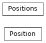

pyokx.okx_market_maker.position_management_service.model.Positions
- class pyokx.okx_market_maker.position_management_service.model.Positions.Position(inst_type: pyokx.okx_market_maker.utils.OkxEnum.InstType = None, mgn_mode: pyokx.okx_market_maker.utils.OkxEnum.MgnMode = None, position_id: str = '', trade_id: str = '', inst_id: str = '', pos_side: pyokx.okx_market_maker.utils.OkxEnum.PosSide = None, pos: float = 0, base_bal: float = 0, quote_bal: float = 0, base_borrowed: float = 0, base_interest: float = 0, quote_borrowed: float = 0, quote_interest: float = 0, ccy: str = '', pos_ccy: str = '', avail_pos: float = 0, avg_px: float = 0, upl: float = 0, upl_ratio: float = 0, upl_last_px: float = 0, upl_ratio_last_px: float = 0, lever: int = 0, last: float = 0, liq_px: float = 0, mark_px: float = 0, usd_px: float = 0, imr: float = 0, margin: float = 0, mgn_ratio: float = 0, mmr: float = 0, liability: float = 0, liability_ccy: str = '', interest: float = 0, notional_usd: float = 0, opt_val: float = 0, adl: int = 0, biz_ref_type: str = '', delta_bs: float = 0, delta_pa: float = 0, gamma_bs: float = 0, gamma_pa: float = 0, theta_bs: float = 0, theta_pa: float = 0, vega_bs: float = 0, vega_pa: float = 0, spot_in_use_amt: float = 0, spot_in_use_ccy: str = '', u_time: int = 0, p_time: int = 0, ctime: int = 0)[source]
Bases:
object- adl: int = 0
- avail_pos: float = 0
- avg_px: float = 0
- base_bal: float = 0
- base_borrowed: float = 0
- base_interest: float = 0
- biz_ref_type: str = ''
- ccy: str = ''
- ctime: int = 0
- delta_bs: float = 0
- delta_pa: float = 0
- gamma_bs: float = 0
- gamma_pa: float = 0
- imr: float = 0
- inst_id: str = ''
- interest: float = 0
- last: float = 0
- lever: int = 0
- liability: float = 0
- liability_ccy: str = ''
- liq_px: float = 0
- margin: float = 0
- mark_px: float = 0
- mgn_ratio: float = 0
- mmr: float = 0
- notional_usd: float = 0
- opt_val: float = 0
- p_time: int = 0
- pos: float = 0
- pos_ccy: str = ''
- position_id: str = ''
- quote_bal: float = 0
- quote_borrowed: float = 0
- quote_interest: float = 0
- spot_in_use_amt: float = 0
- spot_in_use_ccy: str = ''
- theta_bs: float = 0
- theta_pa: float = 0
- trade_id: str = ''
- u_time: int = 0
- upl: float = 0
- upl_last_px: float = 0
- upl_ratio: float = 0
- upl_ratio_last_px: float = 0
- usd_px: float = 0
- vega_bs: float = 0
- vega_pa: float = 0
- class pyokx.okx_market_maker.position_management_service.model.Positions.Positions(_position_map: Dict[str, pyokx.okx_market_maker.position_management_service.model.Positions.Position] = <factory>)[source]
Bases:
object
